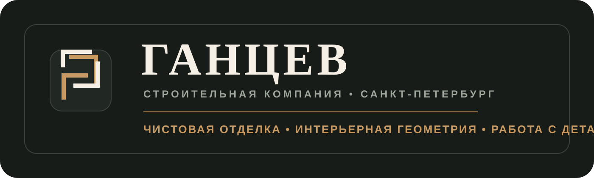
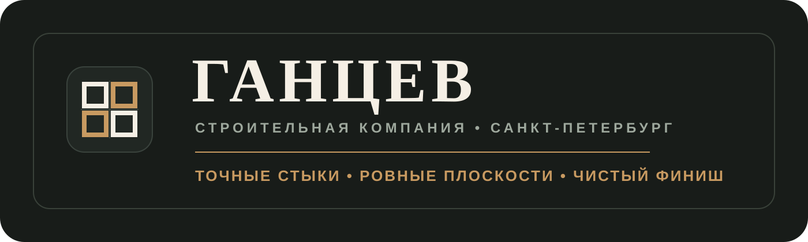
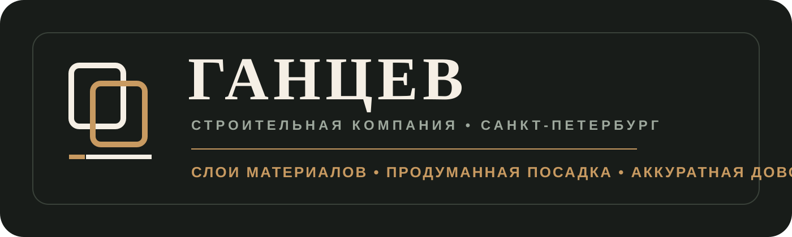

Концепция A: Рамка / Узел
Знак как выверенный интерьерный узел: углы, примыкания и ровная рамка. Самая “премиальная” и спокойная версия.

Ушёл от дома и от буквенной графики. Здесь знаки уже про чистовую работу: рамка, точный стык, плоскости и сборка материалов. Все три можно дальше упростить и довести до чистого фирменного знака.
Знак как выверенный интерьерный узел: углы, примыкания и ровная рамка. Самая “премиальная” и спокойная версия.

Знак про точные стыки, раскладку и аккуратную геометрию отделки. Более техническая и понятная.

Знак про материалы, слои, монтаж и доводку. Более современный, чуть ближе к архитектурной подаче.
